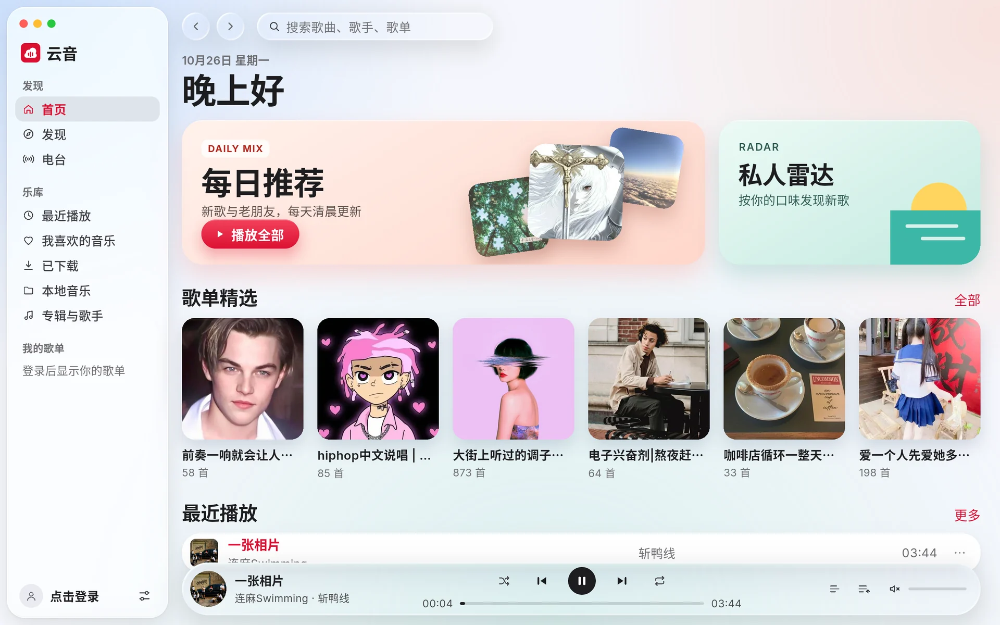
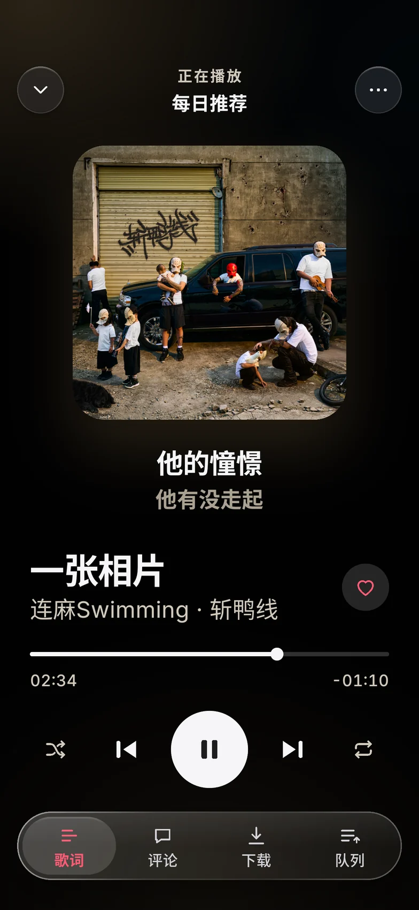
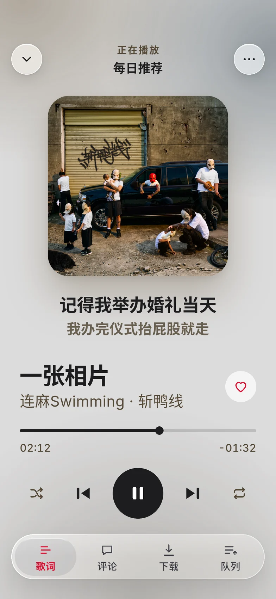
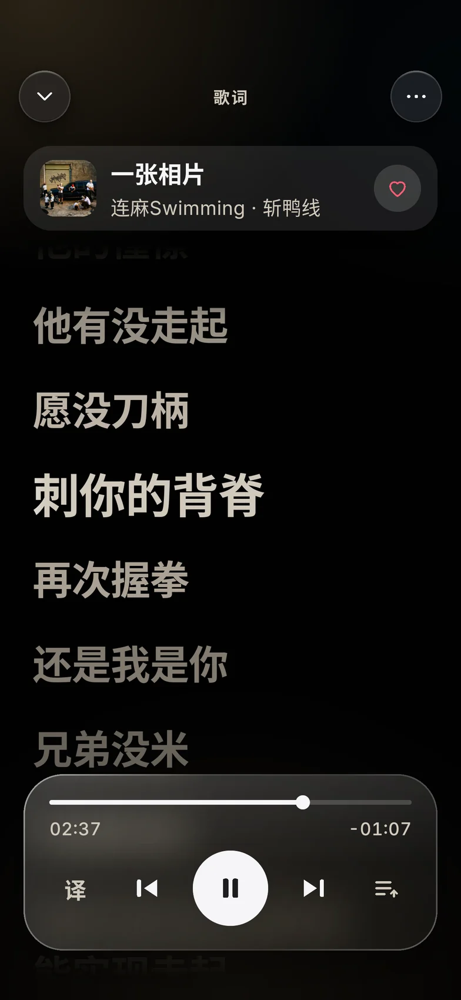
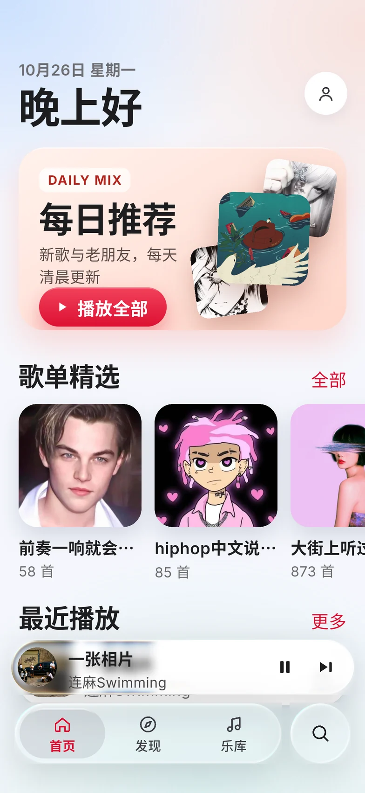
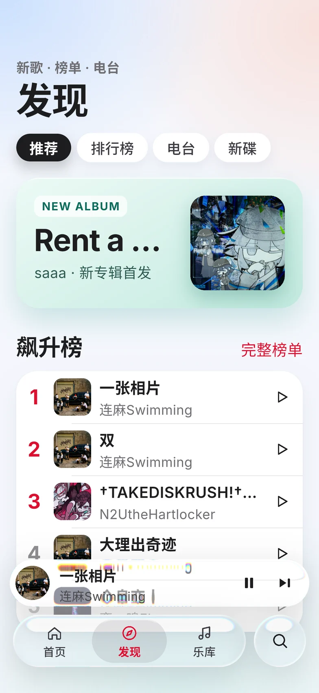
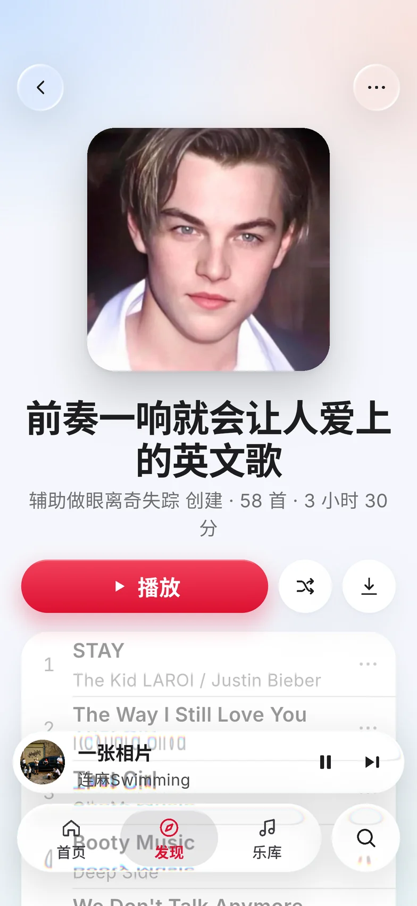
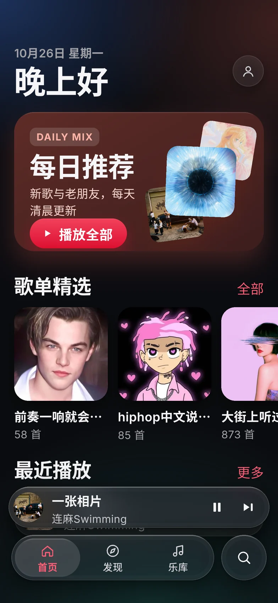

本地音乐
一键扫描本机歌曲，或导入 MP3、FLAC、M4A、OGG、WAV，读取歌名、封面与内嵌歌词，与在线歌曲混合播放。


播放体验
播放页从专辑封面中提取主色与光晕，切歌时缓缓过渡；封面下方随时显示当前与下一句歌词。


桌面端
玻璃侧边栏、底部播放条与快捷键，Windows、Linux 与 macOS 体验一致。
Android
悬浮玻璃导航与迷你播放条，常用操作都在拇指范围内。




特性
一键扫描本机歌曲，或导入 MP3、FLAC、M4A、OGG、WAV，读取歌名、封面与内嵌歌词，与在线歌曲混合播放。
按平台、架构与安装方式下载匹配的安装包，高版本直接覆盖安装，完成后自动重启。
五种主题色与深浅模式；界面背景可跟随正在播放的封面取色，或换成你自己的图片。
Android 自动请求屏幕支持的最高刷新率，滚动与歌词动画更跟手。
登录凭据只保存在本机，只发送给网易云音乐官方接口；没有广告，没有统计。
播放源是可插拔接口，同一个播放队列可以混合不同来源的歌曲。
下载
所有安装包由 GitHub Actions 自动构建，发布在 GitHub Releases。
常见问题
不是。云音是开源的第三方客户端，直接调用网易云音乐的公开接口，与网易公司无关。
不登录也能浏览榜单、歌单并播放部分歌曲；登录后可同步每日推荐、喜欢的音乐与歌单。支持手机验证码、扫码与密码登录。
云音启动时会检查新版本，也可以在“账号与关于”中手动检查。确认后自动下载与当前安装方式匹配的安装包并覆盖安装。
1.0.x 版本使用的是临时签名。请卸载旧版本后安装 1.1.0 或更新版本，此后即可直接覆盖更新。
播放权限与网易云音乐账号一致：会员歌曲需要登录拥有相应权益的账号，否则只能播放试听片段。